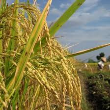
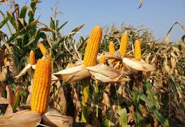
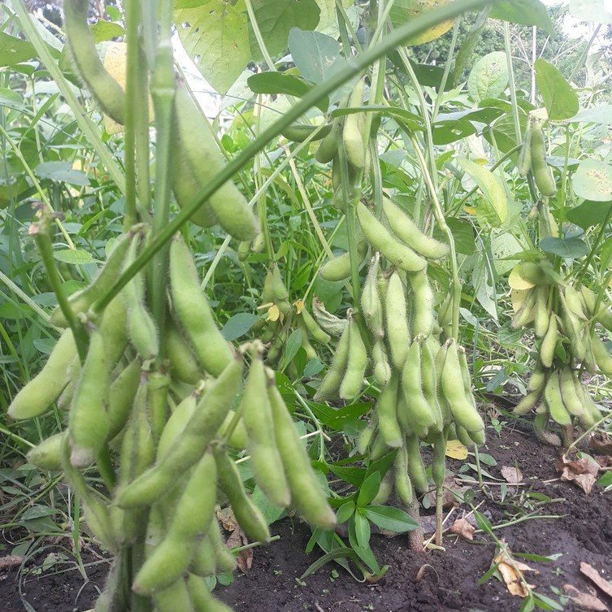

Total Panen
18.4 ton
Gabah kering panen
Pendapatan
Rp128.2M
Musim berjalan
Harga Rata-rata
Rp6.970
Per kg
Riwayat Panen
| Tanggal | Lahan | Komoditas | Hasil | Pendapatan | Status |
|---|---|---|---|---|---|
| 03 Juni 2026 | Sawah D-04 | Padi Inpari | 7.1 ton | Rp49.8M | Terverifikasi |
| 22 Mei 2026 | Kebun C-01 | Cabai Merah | 1.3 ton | Rp31.2M | Menunggu cek |
| 14 Mei 2026 | Blok A-03 | Jagung | 10.0 ton | Rp47.2M | Terverifikasi |

Padi Inpari
Rata-rata hasil 7.1 ton. Kualitas gabah masuk kategori baik.

Jagung
Panen Blok A-03 masuk performa tinggi untuk lahan kering.

Kedelai
Direkomendasikan sebagai rotasi berikutnya untuk menjaga kesuburan tanah.